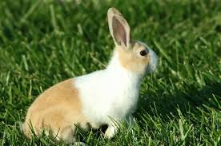

Pufi
Pufi este un iepuras mic si pufos, cu urechi moi care aproape ating pamantul. Este curios si adora sa rontaie frunze de papadie. Este un iepure pitic olandez si are aproape sase luni.
Fulger
Fulger este mic si este extrem de energic si se bucura sa alerge prin casa ca o sageata. Iepure pitic olandez, are sase luni.